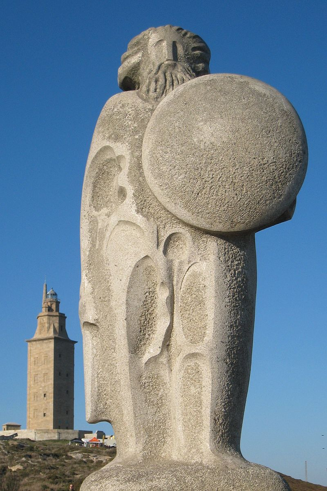
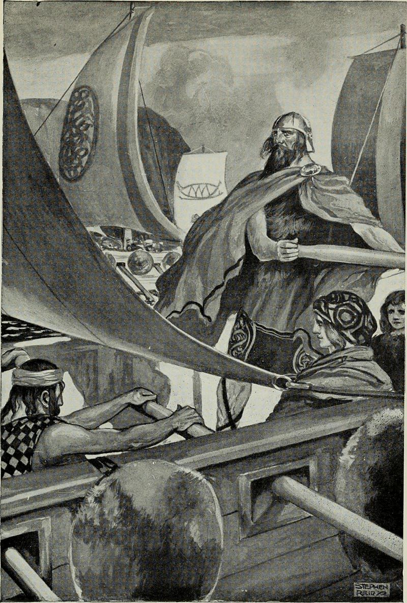
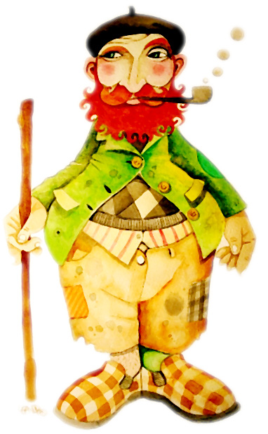
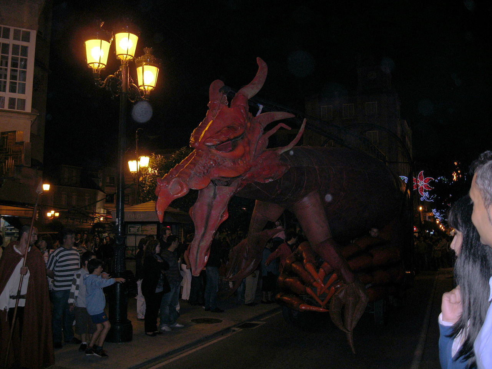
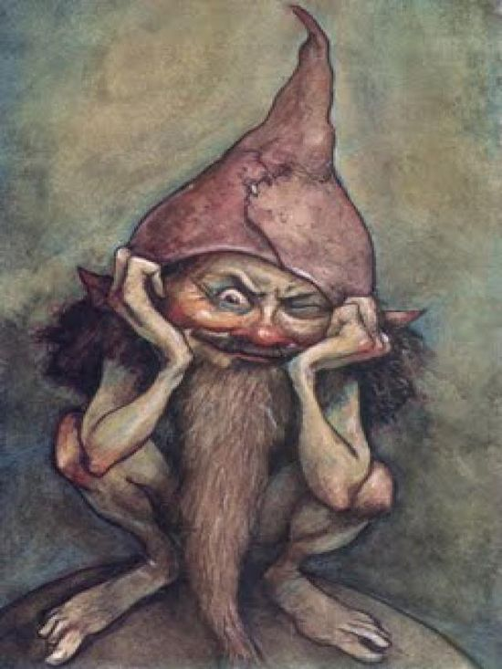
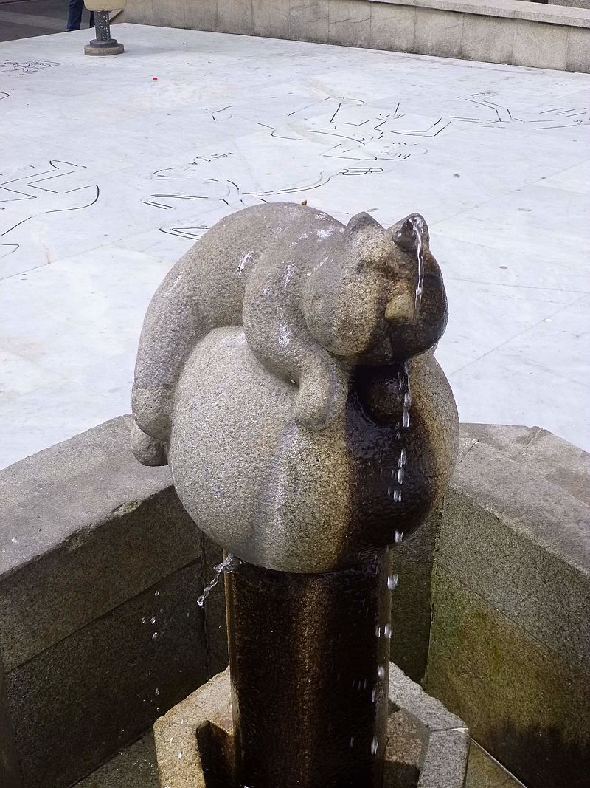
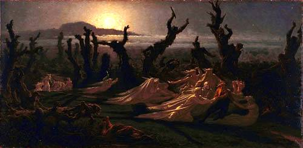
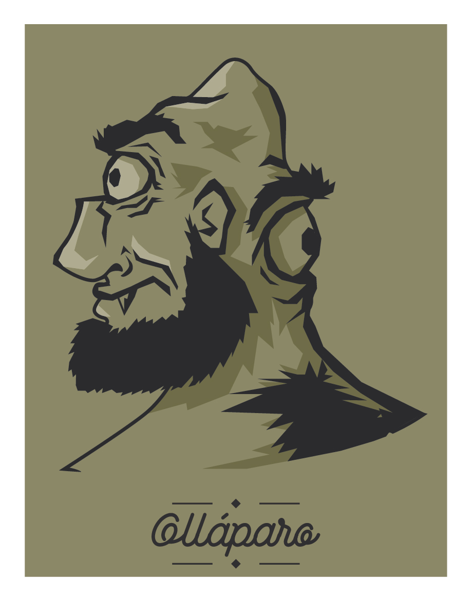
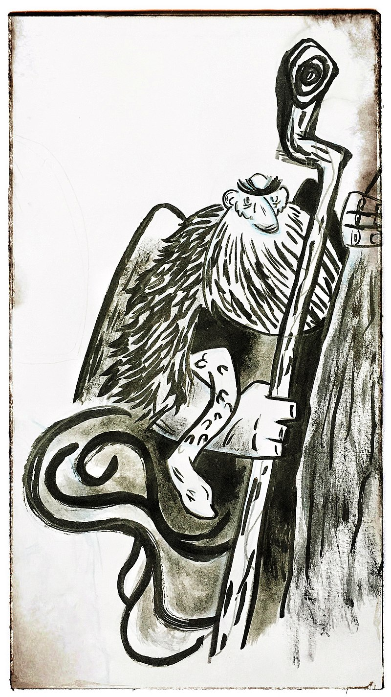

Modern Galician Folklore
Galicia while being a disputed Celtic country, is never disputed in it's cultural, "Celticity". Here we will go over key points in Galician culture and mythology.
The Myth of Galicia

The story of Galicia starts with Breogan. Galicia is known as the "Fogar" e a "Nazón de Breogán", literally meaning the Home, and the Nation of Breogan. He is known in both Ireland and Galicia, being attested in the Lebor Gabála Érenn and Galician folklore. His true Galician name is Brigo, which we can compare Breogan and Brigo to determine his name means Brigos, or Breo Genus, proto-celtic brigos meaning "power" and Genus meaning son of. Galician still carries this celtic word in its vocabulary today, literally meaning "brío" in modern Galician. However, it could also be a mythical character, being the god Berobreo or a male Brigantia.
The story of Galicia starts with Sru, who came from Scythia to Egypt, in search of a “land” for his people as was prophesied by a druid. He had a son called Brath/Breo, who would arrive in Iberia after failing to conquer the isle of Sicily. During his battles in the conquest of the land, he left it to his son, Breogan to finish conquering the peninsula.
Breogan settled in the northwest of the peninsula, in Artabria, (modern day Corunna, Betanzos, and Ferrol). He would build a large tower, which today is rumored to be the Tower of Hercules in A Corunna today. From the top of this tower, his son Ith/Ite, one of the ten children of Breogan dreamed that there was a land north of Brigantia, (Corunna), and when he was old enough, he finally caught a glimpse of the lands beyond the Casitérides.

Ith leaves with three ships, and 30 men to these lands, with his father’s advice that he should not dismount from his horse while the voyage lasts. After facing perilous obstacles, he finally reaches to this promised land, which he calls Eirín. (Ireland). There he would be ambushed and assassinated by the three kings of the Tuatha De Dannan, Mac Cuill, Mac Cecht, and Mac Greine, after he had been knocked over his horse just as Breogan had warned him. In revenge, the eight children of Breogans grandson, Mil Espaine, and Ith’s nine brothers set out from Brigantia for Ireland in 36 ships led by Erimon and Eber Donn and conquered the Island. It is important to note, that the Irish call themselves sons of Mil, and Milesians.
Creatures

The Apalpador, Apalpa-Barrigas ou Pandigueiro is a giant, who lives in the mines and is linked to Christmas from the southern Lugo area. During Christmas, he visits children, and touches their bellies to see if they ate enough during the year, leaving them a sack of chestnuts and a gift.
Biosbardos are a mythological figure in Galicia as an inside joke to inexperienced hunters. They are mentioned as birds, deer, or animals of immense beauty and whoever can hunt them will receive a lifetime of luck. Of course, there is no Biosbardos, and this is the prank. They are also known as cachafellos, cazbellos, cazarellos, cocerellos, cozorellos, gazafellos, cozochas, cozochos, cotofellos or cotovelos.
The Cadela das Tetas Longas, (literally the long breasted female dog), is a mythological being who foretells the death of anyone that meets her. She is a white dog with big breasts dragging onto the floor. It changes by location, but there are those who say she is the size of a beast, that can split in half and throw fire through its mouth and eyes. She barks like a dog, growls like a bear or moos like a cow, or a howling cry at night. She is often accompanied by puppies. If you do see her at night, you should be polite and never look at her in the eye, and tell her God be with you, because then she will disappear and say, “may God be with you too”.

The Coca is a dragon-serpent who lives in the sea or rivers. It is a huge dragon with four legs, and its face lights up his terrible eyes. In some areas, he is a monster-turtle, most likely related to abanque (abanqueiro) afanc in Brythonic meaning water demon. One day in Redondela, he emerged from the sea and ate two girls who were playing on the seashore. He repeated this many time and ate all the beautiful young women in the village. The residents chose the 24 strongest men of the village with the task of slaying the Coca at its next appearance. The church bells rang when he was spotted, and the men rushed towards the Coca and killed him with their swords. The death of the Coca is celebrated annually, where the, “danza das espadas” takes place.

The Diaño is a goblin/demon in Galician and Asturian mythology, that takes the appearance of animals, babies, and humans who causes mischief and pranks, like frightening noises on a night-walk.

The gatipedro is a a cat with a black horn on its head, that has water dripping out of it. He comes into houses at night, and pours it on children that are sleeping, so that they fidget about in the night. To scare the gatipedro, you will need to throw salt in front of the bedroom door and next to the window and any opening to the room. The gatipedro walks leaning on his front legs, so he tastes everything on the ground. Once he tastes, the salt, he will turn around and leave the children of the house alone.

The Lavandeiras, (women who clean/wash), come from Celtic mythology and can be seen in Asturias, Cantabria, Brittany, and Ireland. They are spirits that come out on full moon nights, on riverbanks where they wash sheets stained with blood that never washes off. They appear when the life of someone in the neighborhood is between life and death, foreshadowing his death.
The Lobishome is a werewolf, who are people usually born on the 24th, or on the day of the birth of Christ, or if a marriage has seven or nine male children, without one female in the middle, the last child is marked by a fairy, where he becomes a werewolf and flees to the forest for seven years where he cannot be injured or captured.

The Olláparo or Alláparo is an giant that only has one eye in the middle of his forehead, he is dangerous, being very strong and fierce. He lives in caves and forests of Lugo and Ourense, sometimes he has two eyes, one on the back of his neck. His wives are even uglier and more foul than he is.

The Nubeiro (the Cloudgoer), is a figure in Asturian, Galician, and Cantabrian mythology. Specifically in Galicia, he is a strong, large old man in black fur who can cause storms and direct lightning. He is associated with anything being thunderstorms, fog, lightning, thunder, or heavy rain. He sometimes comes back to Earth after the sky clears up due to losing a cloud and seeks asylum in people’s houses. The only way to prevent his wrath is to ring bells.